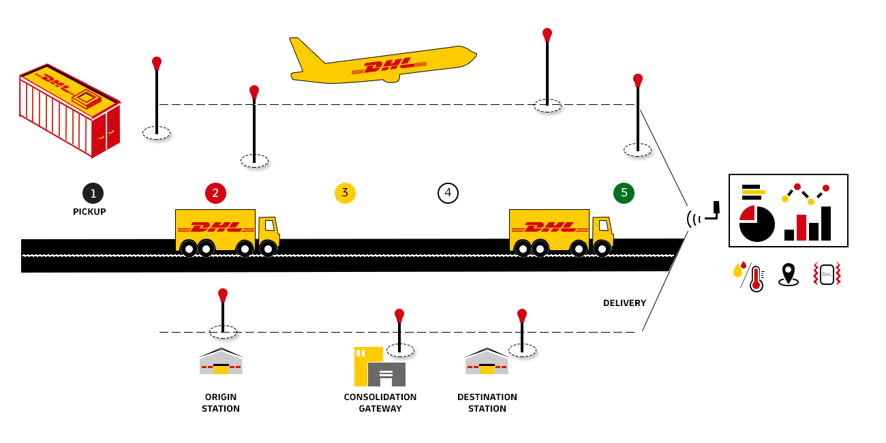

 <section class="track_trace1">
   <div class="row">
     <div class="col-md-4 col-sm-4 col-xs-12 col-lg-6  col-md-push-3">
       <div class="cont_align">
         <h1 class="text_center">Track and Trace</h1>

         <p class="wht_isIOT text_center">Our Track and Trace will give you a real time position/location and status
           transparency during transport of
           a shipment, pallet, wagon or container equipped with an IoT device such as smart sensor or RFID tag and
           linked to the shipping information. Depending on business requirements, the data relevant for product
           quality, such as temperature and humidity can also be communicated.<br><br>
           Current applications on the IoT Platform are CSI Track and Trace and DGFF High Value Shipment Tracking.
         </p>
       </div>
     </div>
     <div class="col-md-4 col-sm-4 col-xs-12 col-lg-6 col-md-push-3 clr_both" id="WhatisIoT">
       <div>
         
       </div>
     </div>


   </div>


 </section>
